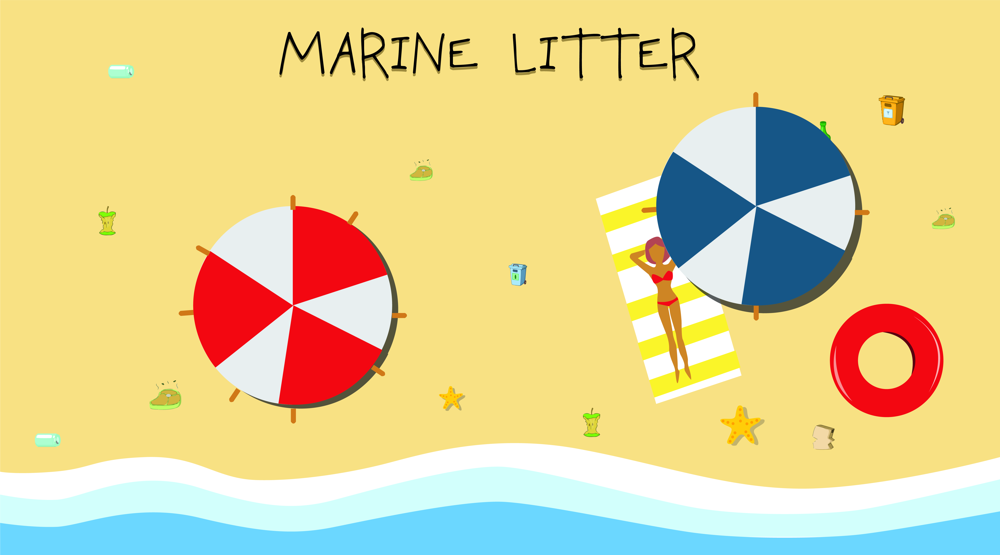

Communities participating in cleaning
Here, we have the major communities which have contributed to beach cleanups
When we represent like this, it can be seen that major chunk of cleanups are done by Surfrider and Swiss Litter
Beach cleanups are important

Overall litter in seas over the years
This is a streamgraph showing how overall litter has varied for various seas of Europe